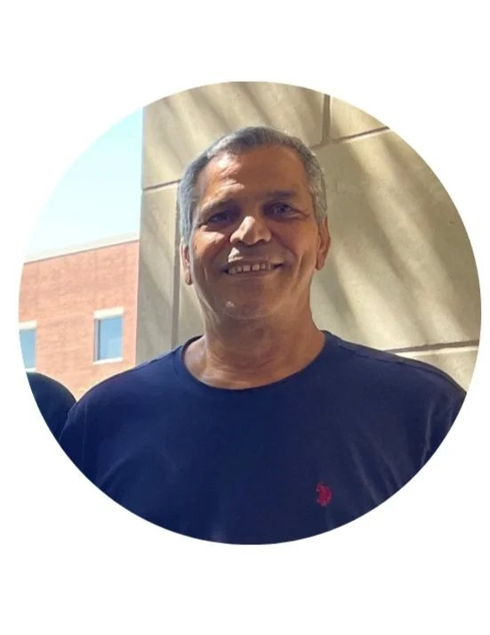
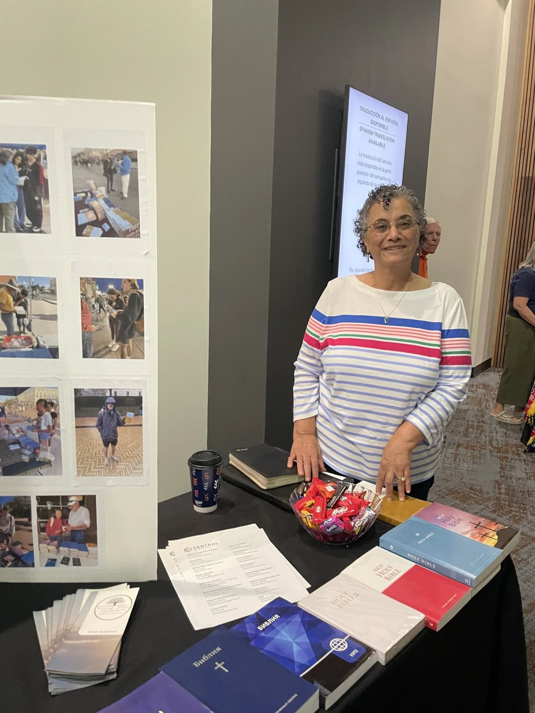
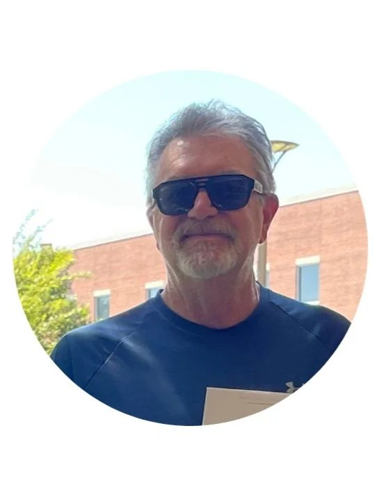
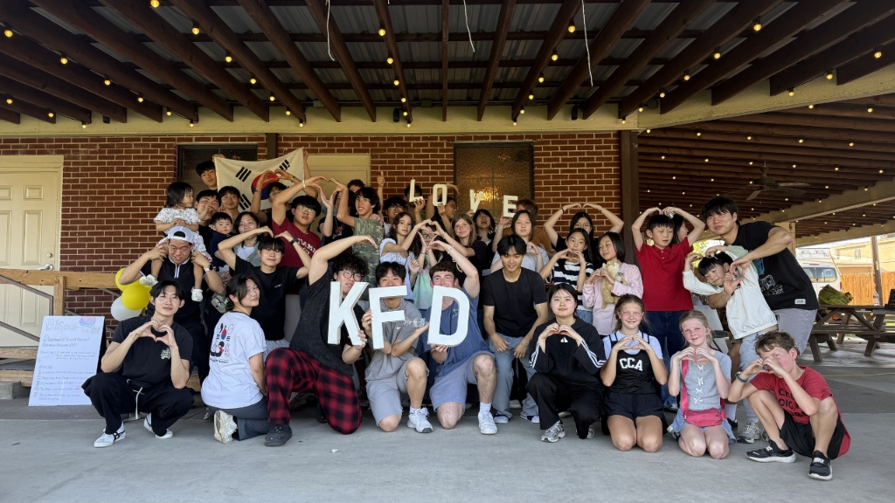

Meet the team.
Dedicated to international student hospitality, prayer support and native-language Bible distribution in Bryan and College Station.
01Leadership
The people behind the table.

Fayez Farag
Visionary leader dedicated to international scholar hospitality, prayer network, and native-language Bible access.

Aziz Farag
Cultivating cross-cultural fellowship, global outreach initiatives, and warm family hospitality for students.
Michael Baer
Directing campus outreach operations, Bible inventory logistics, and student volunteer team coordination.

Jim Koch
Providing faithful ministry support, campus outreach assistance, and community prayer oversight.
Alan Gaylord
Serving in student engagement, campus table discipleship, and native-language Bible distribution.
Brenda Trichel
Supporting cross-cultural student care, hospitality logistics, and community fellowship events.
02Campus ministry
Ministry teams.
Student fellowship and campus teams serving together across Blinn and Texas A&M.

Connect Church IM FBC
Welcoming international scholars and college students through weekly fellowship, gospel outreach and discipleship across Blinn and Texas A&M.